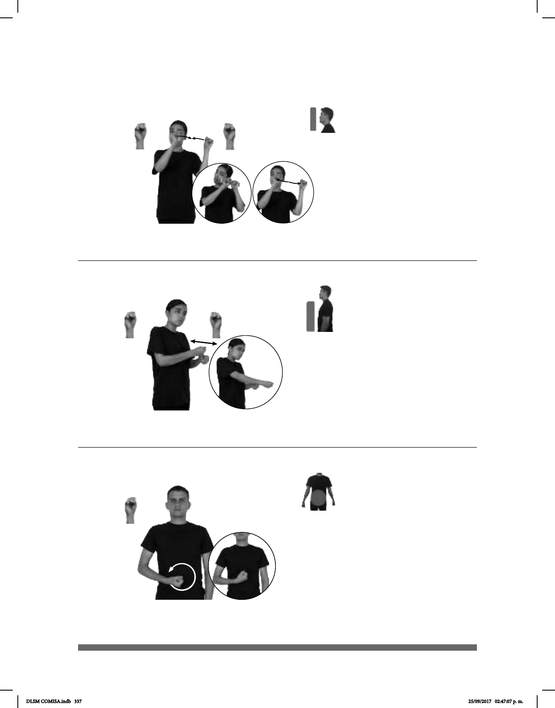

337
Seña: SS
S.1
Palmas hacia fuera.
A la altura del rostro,
del lado izquierdo.
Las manos chocan y
se separan.
Cabeceo de
izquierda a derecha.
sust. m. Golpe que dan
algunos animales, como el chivo o
el buey, con la parte frontal de la
cabeza, o las personas con la frente.
Representación: Simula dos
cabezas que chocan.
(S-130)
AYER JUGAR dm-DAVID Y YO pro-NOSOTROS-DE-DOS DAR-TOPE
Jugando David y yo nos dimos un tope ayer.
Seña: SB
MD y MBS.1
MD palma hacia la izquierda.
MB palma hacia la derecha.
A la altura del pecho. MD sobre
MB.
MD recto hacia el frente
repetidamente.
Cabeza inclinada,
ojos semicerrados, labios redondeados mos-
trando los dientes.
1. v. tr. Someter a alguien a una
violencia física o moral muy intensa;
fuertes. 2.v. tr. Tratar mal a una persona con
golpes, regaños, insultos, desprecio.
(S-131)
ANTES HOMBRE TORTURAR++ ANIMAL DIFERENTE
El hombre torturaba a los animales.
Seña: SM
S.1
Palma hacia arriba.
Sobre el plexo del lado
derecho.
La mano se mueve
formando círculos hacia la izquierda.
sust. m. Sonido cuya
frecuencia de vibraciones es superior al
límite perceptible por el oído humano.
Tiene muchas aplicaciones industriales
y se emplea en medicina.
(S-132)
dm-NOEMÍ YA ULTRASONIDO PARA SABER pos-SUYO BEBE NIÑO
izquierda
NIÑO+MUJER
derecha
Noemí se hizo un ultrasonido para saber si su bebé era niño o niña.
DLSM COMISA.indb 337 25/09/2017 02:47:07 p. m.